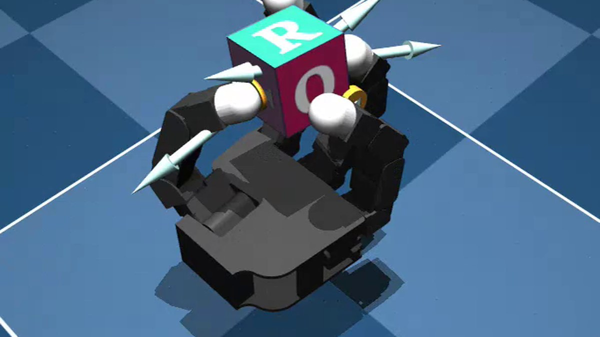
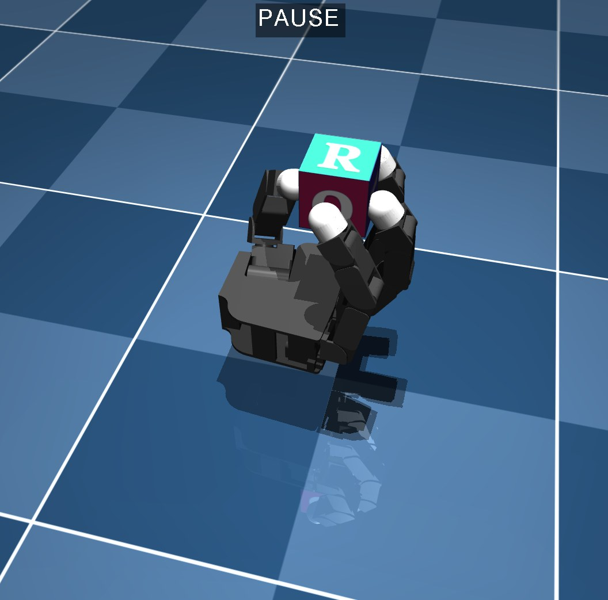
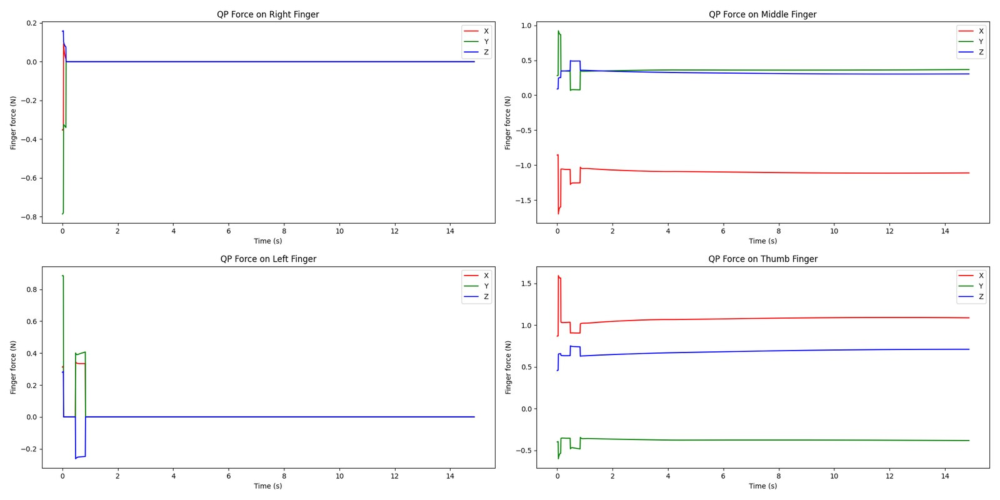
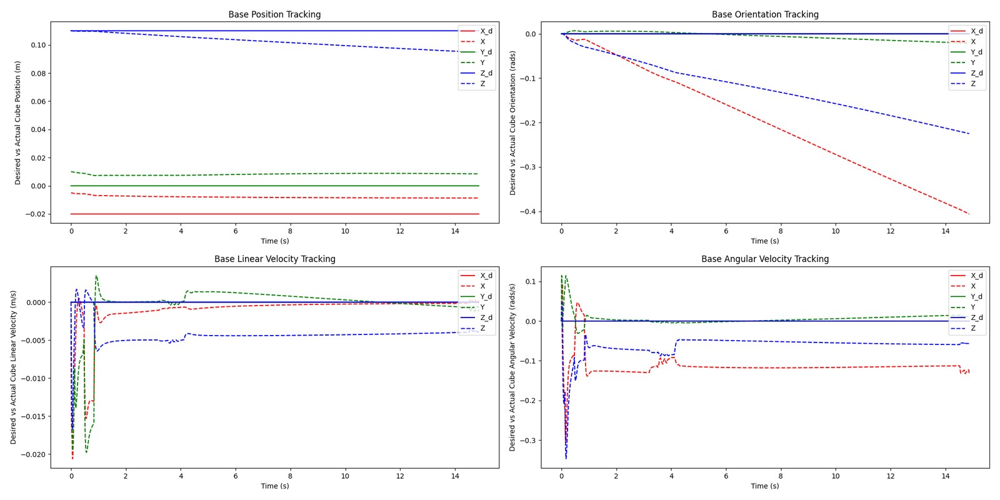

Holding and reorienting a cube with a four-finger Allegro hand, approached two ways: an object-level force controller reimplemented from a published paper, and a reinforcement learning policy trained from scratch.

A dexterous hand holding an object closes a kinematic chain through the object itself. Each fingertip can only push, never pull, so every contact force has to stay inside its friction cone, and together they have to produce exactly the wrench that holds the object where it should be. There is also more than one way to do it: a set of internal forces can squeeze the object without moving it at all, which is what keeps it from slipping.
Arjun Viswanathan and I split the project in two. He built the reinforcement learning side, training a policy in IsaacLab to reorient the cube to commanded orientations. I built the model-based side in MuJoCo, reimplementing the object-level control framework of Pfanne et al. from scratch.
Reference: M. Pfanne, M. Chalon, F. Stulp, H. Ritter and A. Albu-Schäffer, "Object-Level Impedance Control for Dexterous In-Hand Manipulation", IEEE Robotics and Automation Letters, vol. 5, no. 2, pp. 2987-2994, 2020.
The controller works at the level of the object rather than the joints, and stacks three terms that are mapped to joint torques through the hand Jacobian.
The grasp matrix relates object motion to contact motion, so a desired change in object pose becomes a desired change in contact positions. A second term, projected into the nullspace of the grasp matrix, pulls the contacts back toward the configuration they started in to correct for slippage without moving the object. A spring-damper on the combined contact error gives the impedance force.
Impedance alone poses the object but does not manage the internal forces or carry its dynamic load. The total contact force splits into a minimum-norm part that produces the required wrench and a part living in the nullspace of the grasp matrix, which squeezes without moving anything. A quadratic program picks that second part: stay as close as possible to the desired normal force at each contact, subject to the friction cone and to upper and lower bounds on the normal force.
With four joints per finger the force mapping has a nullspace of its own, so the joints can drift toward their limits and lose manipulability without changing anything at the fingertips. A nullspace torque regulates the third and fourth joints of each finger toward each other, and is projected so it cannot disturb the contact forces.



The hand holds the cube stably for long runs, with a little drift from the starting pose over time, and the forces it settles on are sensible. Three things did not come out cleanly:
Reimplementing a paper with no reference implementation is most of the work here, and finding where it is underspecified is part of the result.
The other half of the project, built by Arjun, learns the task instead of solving for it. A PPO policy is trained in IsaacLab across many parallel environments, taking the hand's joint state and the cube's full kinematic state relative to the hand, and commanding smoothed joint positions. The reward tracks the angle between the cube's orientation and a randomly sampled quaternion goal, with a bonus for reaching it and small penalties on joint velocity and action rate to stop the fingers jittering.
Friction, link and object masses, joint stiffness and damping are all randomised during training, which is what makes the policy robust to the model mismatch it would meet on real hardware. It reaches each new goal orientation in one to two seconds and keeps going as new ones are sampled.
The contrast is the interesting part. The force controller is explicit about contacts, friction and internal forces, and every term can be plotted and argued with, which is what the figures above are. The policy is none of those things, uses the whole hand rather than just the fingertips, and handles mass and friction it was never told about.